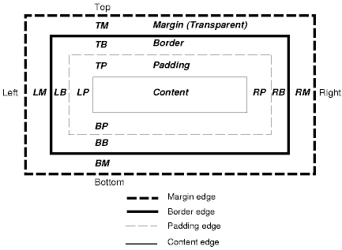

What is the difference between Margin, Border, and Padding?
Some people fresh to programming may have run into these terms and asked themselves this same question. Below is a diagram that will visually lay it out for you but the simplest way of explaining it is:

"The space outside of, or between, elements is what comprises the margin areas. This area would also be outside of any borders set on elements. margin = space around (outside) the element from border outwards. padding = space around (inside) the element from text to border."
The way that helped me the best to understand this concept was to think of a piece of ruled paper. The margin would be the space outside the paper, the border would be the edges of the paper, and the padding would be the space on the paper where between your writing and the edge of the paper.
The border is the edge of the space you are inputing information. Think of this like walls of the room you are sitting in. Just like yourself, the information you are inputing cannot exceed the limits of the walls. The margin is the space between the walls and the next room. While this distance can be defined, the information you have inputed cannot enter this location. Finally, the padding is the distance or space between yourself and the walls of the room. This space can also be defined as if you were able to control the size of your room.
When defining areas of a page, these characteristics can assist you in spacing your items appropriately. Understanding the difference is also crucial in being able to edit the desired space. Should someone find themselves still confused, I would encourage them to save the image posted above for future reference.
ASDV